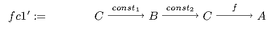
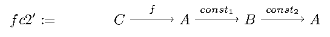
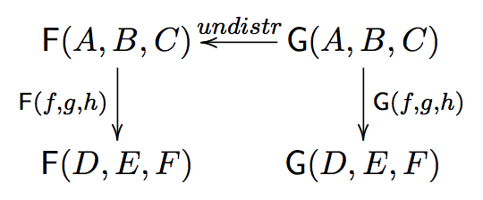
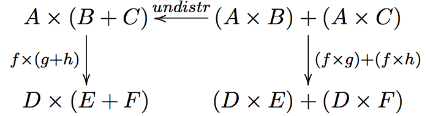

program design by calculation
Table of Contents
- 2.2 function application
- 2.3 (2.6) function composition : \(\circ = (B \rightarrow C) \rightarrow (A \rightarrow B) \rightarrow A \rightarrow C\)
- 2.4 (2.9) identity function(s) : \(id \hspace{0.25em} x = x\)
- 2.5 (2.12) constant function(s) : \(const \hspace{0.25em} x \hspace{0.25em} \_ = x\)
- 2.6 monics (one-to-one/injective) and epics (onto/surjective)
- 2.7 (2.16) isomorphisms : \(f \circ f^{\circ} = id_b \wedge f^{\circ} \circ f = id_a\)
- 2.8 products — gluing functions which do not compose
- (2.18) pair def : \(\langle f,g \rangle c = (f \hspace{0.25em} c, g \hspace{0.25em} c)\)
- (2.20) \(\times\)-cancellation :
fst/sndprojections - (2.22) \(\times\) of two functions def : \(f \times g = \langle f \circ fst, g \circ snd \rangle\)
- (2.24) \(\times\)-fusion : \(\langle g,h \rangle \circ f = \langle g \circ f, h \circ f \rangle\)
- (2.25) \(\times\)-absorption : \((i \times j) \circ \langle g,h \rangle = \langle i \circ g,j \circ h \rangle\)
- (2.26) : \(i \circ fst = fst \circ (i \times j)\)
- (2.27) : \(j \circ snd = snd \circ (i \times j)\)
- (2.28) \(\times\)-functor : \((g \circ h) \times (i \circ j) = (g \times i) \circ (h \times j)\)
- (2.29) \(\times\)-functor-id : \(id_A \times id_B = id_{A \times B}\)
- (2.30) \(\times\)-reflexion : \(\langle fst,snd \rangle = id_{A \times B}\)
- (2.31) \(\times\) is commutative : \(A \times B \cong B \times A\)
- (2.32) \(\times\) is associative : \(A \times (B \times C) \cong (A \times B) \times C\)
- 2.9 coproducts — gluing functions which do not compose
- (2.35) either def : \([f,g] : A + B \rightarrow C\)
- (2.37) \(+\) of two functions def : \(f + g = [Left \circ f, Right \circ g]\)
- (2.38) \(+\)-cancellation : \([g,h] \circ Left = g\), \([g,h] \circ Right = h\)
- (2.39) \(+\)-reflexion : \([ Left, Right ] = id_{A + B}\)
- (2.40) \(+\)-fusion : \(f \circ [ g , h ] = [ f \circ g , f \circ h ]\)
- (2.41) \(+\)-absorption : \([ g , h ] \circ ( i + j ) = [ g \circ i, h \circ j ]\)
- (2.42) \(+\)-functor : \((g \circ h) + (i \circ j) = (g + i) \circ (h + j)\)
- (2.43) \(+\)-functor-id : \(id_A + id_B = id_{A+B}\)
- 2.10 mixing products and coproducts
- (2.47) pair/either exchange : \([ \langle f , g \rangle , \langle h , k \rangle ] = \langle [ f , h ], [ g , k ] \rangle\)
- (2.49) undistr def : \(undistr = [ id \times first , id \times snd ]\)
- (2.50) isomorphism: product distributes through coproduct : \((A \times B) + (A \times C) \cong A \times (B + C)\)
- motivation for functors
Last Modified : 2015 Jan 30 (Fri) 11:24:58 by Harold Carr.
{-# LANGUAGE NoMonomorphismRestriction #-} -- for `arr transform` module PDBC where import Control.Arrow import Data.Char (digitToInt) import Test.HUnit as T import Test.HUnit.Util as U -- https://github.com/haroldcarr/test-hunit-util
2.2 function application
TODO
2.3 (2.6) function composition : \(\circ = (B \rightarrow C) \rightarrow (A \rightarrow B) \rightarrow A \rightarrow C\)
aka "function-arrow chaining"
http://hackage.haskell.org/package/base-4.7.0.1/docs/src/GHC-Base.html#.
(.) :: (b -> c) -> (a -> b) -> a -> c (.) f g = \x -> f (g x)

(2.8) composition is associative : \((f \circ g) \circ h = f \circ (g \circ h)\)
Similar to \((a + b) + c = a + (b + c)\)

2.4 (2.9) identity function(s) : \(id \hspace{0.25em} x = x\)
http://hackage.haskell.org/package/base-4.7.0.1/docs/src/GHC-Base.html#id
id :: a -> a id x = x
id does not lose any information
(2.10) id is the unit of composition : \(f \circ id = id \circ f = f\)

2.5 (2.12) constant function(s) : \(const \hspace{0.25em} x \hspace{0.25em} \_ = x\)
http://hackage.haskell.org/package/base-4.7.0.1/docs/src/GHC-Base.html#const
const :: a -> b -> a const x _ = x
A function that results after apply const to x
c' :: a -> Char c' = const 'c'
loses all information (i.e., ignores its argument).
(2.13) constant-fusion : \(c \circ f = c\)
constantFusion :: (x -> y) -> x -> Char constantFusion f = c' . f
The following diagram shows
- c' as the function (
const_2) that results from applyingconst(here shown asconst_1) toChar fapplied toxresulting inyconst_2applied toyresulting inChar

Note
- input to
fcan be any type - result of
fcan be any type - ignores result of
f - output of constant-fusion not (necessarily) type related to co/domain of
f
constant-fusion example
c :: a -> Char c = const 'c' c0 = U.t "c0" (c' . (+1) $ 45) 'c' c1 = U.t "c1" (const 30 . ("foo" ++) $ "bar") 30
Exercise 2.1
These two functions have the same type:
fc1 :: (c -> a) -> c -> b -> a fc1 f c = f . const c fc2 :: (c -> a) -> c -> b -> a fc2 f c = const (f c)
Regarding the functions that result from applying fc1 and fc2 to f and c
- 1st arg: domain and argument to
f - 2nd arg: ignored
- output: codomain and result of
f
From the outside there is no difference.
On the inside


- fc1' first "remembers" the first arg, then ignores
b, then appliesfto the remembered value. - fc2' first applies
fto the first arg and "remembers" the result, that is returned after ignoringb.
2.6 monics (one-to-one/injective) and epics (onto/surjective)
Identity and constant functions are limit points with respect to information preservation
- identity preserves all information
- constant loses all information
All other functions lose some information (regarded as unneeded in context).
Functional programming: art of transforming or losing information in a controlled manner to fit context.
Functions lose information when
- give same output for two or more inputs (e.g., constant function)
- only use one value of codomain (e.g., constant function)
http://en.wikipedia.org/wiki/Bijection,_injection_and_surjection
Injective functions (aka "one-to-one", "monic") do not lose information
- each element of domain maps to unique element of codomain
- (but not all elements of codomain are necessarily mapped to)
- Categorical generalization of injective functions called "monic"
Surjective functions (aka "onto", "epic") do not lose information
- all elements of codomain are mapped to
- Categorical generalization of surjective functions call "epic" (but converse is not true in all categories)
Exercise 2.2
Under what circumstances is a constant function epic?
data Single = Single deriving Show epicConstantFunction :: b -> Single epicConstantFunction = const Single
2.7 (2.16) isomorphisms : \(f \circ f^{\circ} = id_b \wedge f^{\circ} \circ f = id_a\)
A isomorphic function (aka bijective) is one-to-one (monic) and onto (epic).
http://en.wikipedia.org/wiki/Isomorphism
Given \(f : A \rightarrow B\), \(f\) has inverse \(f^{\circ} : B \rightarrow A\), such that 2.16 (above) holds.
Isomorphisms are important because they convert between "formats" without losing information, although the data adopts a different “shape” in each of them.
"A is isomorphic to B" is written: \(A \cong B\).
Isomorphic data domains are regarded as "abstractly" the same.
example
http://hackage.haskell.org/package/base-4.7.0.1/docs/Prelude.html#t:Enum
data Weekday = Sunday | Monday | Tuesday | Wednesday | Thursday | Friday | Saturday deriving (Enum, Eq, Ord, Show) data Seven = One | Two | Three | Four | Five | Six | Seven deriving (Enum, Eq, Ord, Show) transform :: (Enum a, Ord a, Enum b, Ord b) => a -> b transform = toEnum . fromEnum i0 = U.t "i0" (transform Tuesday) Three i1 = U.t "i1" (transform Three) Tuesday transform2 :: (Enum a, Ord a) => Int -> a transform2 = toEnum . (`rem` 7) i2 = U.t "i2" (transform2 15) Two i3 = U.t "i3" (transform2 15) Monday
Constants, identities, epics, monics and isos are closed under composition (e.g., the composition of two epics is epic).
2.8 products — gluing functions which do not compose
(2.18) pair def : \(\langle f,g \rangle c = (f \hspace{0.25em} c, g \hspace{0.25em} c)\)
\(\langle f,g \rangle : C \rightarrow A \times B\)
Not every two functions can be composed, e.g., \(f : C \rightarrow A\) and \(g : C \rightarrow B\) (because domain of one is not codomain of other).
But, since \(f\) and \(g\) share the same domain \(C\), their outputs can be paired (aka "split")
http://www.haskell.org/ghc/docs/7.4.1/html/libraries/ghc-prim-0.2.0.0/src/GHC-Tuple.html#(,)
https://hackage.haskell.org/package/base-4.4.0.0/docs/src/Data-Tuple.html
-- cartesian product of types pair :: (c -> a) -> (c -> b) -> c -> (a,b) pair f g c = (f c, g c) split = pair -- aka p0 = U.tt "p0" [ ( transform `pair` show) Sunday , (arr transform &&& arr show) Sunday ] (One, "Sunday") -- cartesian product of elements p1 = U.t "p1" [ (b,c) | b <- [Sunday, Monday, Tuesday], c <- [One, Two]] [(Sunday,One),(Sunday,Two),(Monday,One),(Monday,Two),(Tuesday,One),(Tuesday,Two)]
(2.20) \(\times\)-cancellation : fst / snd projections
p2 = U.t "p2" (fst (1,2)) 1 p3 = U.t "p3" (snd (1,2)) 2

(2.22) \(\times\) of two functions def : \(f \times g = \langle f \circ fst, g \circ snd \rangle\)
Use when domains do not coincide.
product :: (c -> a) -> (d -> b) -> (c,d) -> (a,b) product f g = pair (f . fst) (g . snd) p4 = U.tt "p4" [ (( (*2) `PDBC.product` (++"bar")) (2,"foo")) , ((arr (*2) *** arr (++"bar")) (2,"foo")) ] (4, "foobar")

(2.24) \(\times\)-fusion : \(\langle g,h \rangle \circ f = \langle g \circ f, h \circ f \rangle\)
Pair/split is right-distributive with respect to composition

p5 = U.tt "p5" [ (pair (*2) show . digitToInt) '3' , pair ((*2) . digitToInt) (show . digitToInt) '3' ] (6,"3")
Left-distributivity does not hold.
(2.25) \(\times\)-absorption : \((i \times j) \circ \langle g,h \rangle = \langle i \circ g,j \circ h \rangle\)
pair absorbs \(\times\) as a kind of fusion – a consequence for \(\times\)-fusion and \(\times\)-cancellation.
For \(f \circ \langle g,h \rangle\) when \(f = i \times j\)
| \((i \times j) \circ \langle g,h \rangle\) | |||
| (2.22) | product of 2 funs def | = | \(\langle i \circ fst, j \circ snd \rangle \circ \langle g,h \rangle\) |
| (2.24) | \(\times\)-fusion | = | \(\langle (i \circ fst) \circ \langle g, h \rangle,(j \circ snd) \circ \langle g,h \rangle \rangle\) |
| (2.8) | associative composition | = | \(\langle i \circ (fst \circ \langle g, h \rangle),j \circ (snd \circ \langle g,h \rangle) \rangle\) |
| (2.20) | \(\times\)-cancellation | = | \(\langle i \circ g,j \circ h \rangle\) |

-- non-optimized version pcp :: (d -> a) -> (e -> b) -> (c -> d) -> (c -> e) -> c -> (a, b) pcp i j g h = PDBC.product i j . pair g h -- optimized version via 2.20 productComposePair :: (d -> a) -> (e -> b) -> (c -> d) -> (c -> e) -> c -> (a, b) productComposePair i j g h = pair (i . g) (j . h) p6 = U.tt "p6" [ pcp show read (*2) show 4 , productComposePair show read (*2) show 4 ] ("8",4)
(2.26) : \(i \circ fst = fst \circ (i \times j)\)
(2.27) : \(j \circ snd = snd \circ (i \times j)\)
- (2.26) : given \(D \times E\) no need to evaluate \(j\)
- (2.27) : given \(D \times E\) no need to evaluate \(i\)
p7 = U.tt "p7" [ (fst . (PDBC.product show show)) (3, 4) , show $ fst (3, 4) -- optimized via 2.26 ] "3"
(2.28) \(\times\)-functor : \((g \circ h) \times (i \circ j) = (g \times i) \circ (h \times j)\)
productFunctorLeft :: (e -> a) -> (c -> e) -> (f -> b) -> (d -> f) -> (c, d) -> (a, b) productFunctorLeft g h i j = PDBC.product (g . h) (i . j) productFunctorRight :: (e -> a) -> (c -> e) -> (f -> b) -> (d -> f) -> (c, d) -> (a, b) productFunctorRight g h i j = PDBC.product g i . PDBC.product h j p8 = U.tt "p8" [ ((productFunctorLeft (+2) (+4) (+6.0) (+8.0))::(Int,Double)->(Int,Double)) (1,100.0) , ((productFunctorRight (+2) (+4) (+6.0) (+8.0))::(Int,Double)->(Int,Double)) (1,100.0) ] (7,114.0)
(2.29) \(\times\)-functor-id : \(id_A \times id_B = id_{A \times B}\)
p9 = U.tt "p9" [ PDBC.product id id ("x", 'y') , id ("x", 'y') ] ("x", 'y')
(2.30) \(\times\)-reflexion : \(\langle fst,snd \rangle = id_{A \times B}\)

p10 = U.tt "p10" [ pair fst snd ("x", 'y') , id ("x", 'y') ] ("x", 'y')
(2.31) \(\times\) is commutative : \(A \times B \cong B \times A\)
\(\langle snd,fst \rangle = swap\)
swap0 :: (a,b) -> (b,a) swap0 ab = (,) (snd ab) (fst ab) -- swap0 (a,b) = (b,a)
Isomorphic:
| \(swap \circ swap\) | |||
| def swap | = | \(\langle snd,fst \rangle \circ swap\) | |
| (2.24) | \(\times\)-fusion | = | \(\langle snd \circ swap,fst \circ swap \rangle\) |
| def swap | = | \(\langle snd \circ \langle snd,fst \rangle, fst \circ \langle snd,fst \rangle\) | |
| (2.20) | \(\times\)-cancellation | = | \(\langle fst,snd \rangle\) |
| (2.30) | \(\times\)-reflexion | = | \(id\) |
Therefore, no information is lost (or gained) when swapping fields in record datatypes.
(2.32) \(\times\) is associative : \(A \times (B \times C) \cong (A \times B) \times C\)
\(assocl = \langle \langle fst, fst \circ snd \rangle, snd \circ snd \rangle\)
\(assocr = \langle fst \circ fst, \langle snd \circ fst, snd \rangle \rangle\)
assocl :: (a, (b,c)) -> ((a,b),c) -- assocl (a,(b,c)) = ((a,b),c) assocl = pair (pair fst (fst . snd)) (snd . snd) assocr :: ((a,b),c) -> (a,(b,c)) -- assocr ((a,b),c) = (a,(b,c)) assocr = pair (fst . fst) (pair (snd . fst) snd) -- (2.33)
p11 = U.tt "p11" [ (assocr . assocl) ('a', ('b', 'c')) , id ('a', ('b', 'c')) ] ('a', ('b', 'c'))
Exercise 2.3
| = | \((assocr \circ assocl) (a, (b, c))\) | ||
| assocl def | = | \((assocr \circ \langle \langle fst , fst \circ snd \rangle , snd \circ snd \rangle) (a, (b, c))\) | |
| (2.18) | pair def | = | \((assocr \circ ( \langle fst , fst \circ snd \rangle (a, (b, c)), (snd \circ snd) (a, (b, c)) )\) |
| (2.20) x 2 | \(\times\)-cancellation | = | \((assocr \circ ( \langle fst , fst \circ snd \rangle (a, (b, c)), c )\) |
| (2.18) | pair def | = | \((assocr \circ ( (fst (a, (b, c)), (fst \circ snd) (a, (b, c)) ), c )\) |
| (2.20) x 3 | \(\times\)-cancellation | = | \((assocr \circ ( ( a , b ), c )\) |
| = | … | ||
| = | \((a, (b, c))\) |
Exercise 2.4
Use (2.22) (product of two functions) to prove (2.28) (\(\times\)-functor) and (2.29) (\(\times\)-functor-id).
Prove (2.28):
| \(((g \circ h) \times (i \circ j))\) | |||
| 2.22 | = | \(\langle (g \circ h) \circ fst, (i \circ j) \circ snd \rangle\) | |
| TODO … |
2.9 coproducts — gluing functions which do not compose
(2.35) either def : \([f,g] : A + B \rightarrow C\)
coproduct of \(A\) and \(B\) is disjoint union data type that has values "stamped" with different tags to indicate whether the value came from \(A\) or \(B\).
https://hackage.haskell.org/package/base-4.7.0.0/docs/src/Data-Either.html#either
Use Either with Left / Right injections.
either :: (a -> c) -> (b -> c) -> Either a b -> c either f _ (Left a) = f a either _ g (Right b) = g b
e1 = U.tt "e1" [ ((*11) `PDBC.either` (+1)) (Left 9) , ((*11) `PDBC.either` (+1)) (Right 98) , (arr (*11) ||| arr (+1)) (Left 9) , (arr (*11) ||| arr (+1)) (Right 98) ] 99

product and coproduct are dual mathematical constructs. Duality means that everythings said about product \(A \times B\) can be rephrased to coproduct \(A + B\).
The sum of two functions f + g is the dual of the product of two functions f × g :
(2.37) \(+\) of two functions def : \(f + g = [Left \circ f, Right \circ g]\)
sum :: (a -> c) -> (b -> d) -> Either a b -> Either c d sum f g = PDBC.either (Left . f) (Right . g)
su1 = U.tt "su1" [ ( (*11) `PDBC.sum` (+1)) (Left 9) , (arr (*11) +++ arr (+1)) (Left 9) ] (Left 99)
(2.38) \(+\)-cancellation : \([g,h] \circ Left = g\), \([g,h] \circ Right = h\)

sc1 = U.tt "sc1" [ (PDBC.either (+10) (*10) . Left) 10 , (+10) 10 ] 20 sc2 = U.tt "sc2" [ (PDBC.either (+10) (*10) . Right) 10 , (*10) 10 ] 100
(2.39) \(+\)-reflexion : \([ Left, Right ] = id_{A + B}\)

sr1 = U.tt "sr1" [ (PDBC.either Left Right (Left 10) :: (Show a, Num a, Show b, Num b) => Either a b) , id (Left 10) ] (Left 10) sr2 = U.tt "sr2" [ (PDBC.either Left Right (Right 100) :: (Show a, Num a, Show b, Num b) => Either a b) , id (Right 100) ] (Right 100)
(2.40) \(+\)-fusion : \(f \circ [ g , h ] = [ f \circ g , f \circ h ]\)

sumFusionLeft, sumFusionRight :: (c -> d) -> (a -> c) -> (b -> c) -> Either a b -> d sumFusionLeft f g h = f . (PDBC.either g h) sumFusionRight f g h = PDBC.either (f . g) (f . h)
(2.41) \(+\)-absorption : \([ g , h ] \circ ( i + j ) = [ g \circ i, h \circ j ]\)

sumAbsorptionLeft, sumAbsorptionRight :: (d -> c) -> (e -> c) -> (a -> d) -> (b -> e) -> Either a b -> c sumAbsorptionLeft g h i j = (PDBC.either g h) . (PDBC.sum i j) sumAbsorptionRight g h i j = PDBC.either (g . i) (h . j)
(2.42) \(+\)-functor : \((g \circ h) + (i \circ j) = (g + i) \circ (h + j)\)

Figure 17: left

Figure 18: right
sumFunctorLeft, sumFunctorRight :: (e -> c) -> (a -> e) -> (f -> d) -> (b -> f) -> Either a b -> Either c d sumFunctorLeft g h i j = PDBC.sum (g . h) (i . j) sumFunctorRight g h i j = (PDBC.sum g i) . (PDBC.sum h j)
(2.43) \(+\)-functor-id : \(id_A + id_B = id_{A+B}\)
TODO : diagram
sumFunctorIdLeft, sumFunctorIdRight :: Either a b -> Either a b sumFunctorIdLeft = PDBC.sum id id sumFunctorIdRight = id
Exercise 2.5 TODO
Exercise 2.6 TODO
2.10 mixing products and coproducts
(2.47) pair/either exchange : \([ \langle f , g \rangle , \langle h , k \rangle ] = \langle [ f , h ], [ g , k ] \rangle\)
{- peExchangeLeft, peExchangeRight :: (a -> a') -> (a -> b') -> (b -> a') -> (b -> b') -> Either a b -> (a', b') -} peExchangeLeft, peExchangeRight :: (a -> b) -> (a -> d) -> (c -> b) -> (c -> d) -> Either a c -> (b, d) peExchangeLeft f g h k = PDBC.either (pair f g) (pair h k) peExchangeRight f g h k = pair (PDBC.either f h) (PDBC.either g k)
(2.49) undistr def : \(undistr = [ id \times first , id \times snd ]\)
undistr :: Either (a,b) (a,c) -> (a, Either b c) undistr = PDBC.either (PDBC.product id Left) (PDBC.product id Right)
undistr shows:
(2.50) isomorphism: product distributes through coproduct : \((A \times B) + (A \times C) \cong A \times (B + C)\)
motivation for functors
| given | \(f : A \rightarrow E\) | ||
| given | \(g : B \rightarrow E\) | ||
| given | \(h : C \rightarrow F\) | ||
| (2.37) | \(+\) of two functions def | = | \(g + h : B + C \rightarrow E + F\) |
| (2.22) | \(\times\) of two functions def | = | \(f \times (g + h) : A \times (B + C) \rightarrow D \times (E + F)\) |
Preserves shape, but changes internal element types.
Combination of products and sums of functions have same shape as the expressions that denote their domain and range.
Now abstract
- left of (2.50) as : def G\((a,b,c) = (a \times b) + (a \times c)\)
- right of (2.50) as : def F\((a,b,c) = a \times (b + c)\)
- where \(a\), \(b\), \(c\) denote types
then, with specific types and functions:

which instantiates to:

Exercise 2.7 TODO
Exercise 2.8 TODO
Exercise 2.9 TODO
main = T.runTestTT $ T.TestList $ c0 ++ c1 ++ i0 ++ i1 ++ i2 ++ i3 ++ p0 ++ p1 ++ p2 ++ p3 ++ p4 ++ p5 ++ p6 ++ p7 ++ p8 ++ p9 ++ p10 ++ p11 ++ e1 ++ su1 ++ sc1 ++ sc2 ++ sr1 ++ sr2